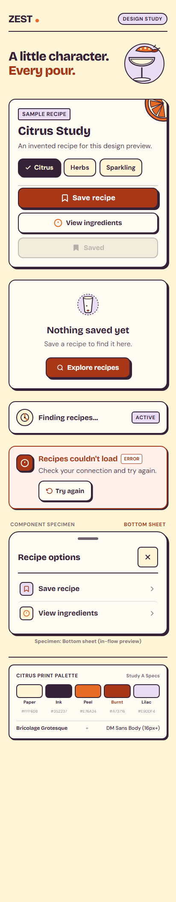
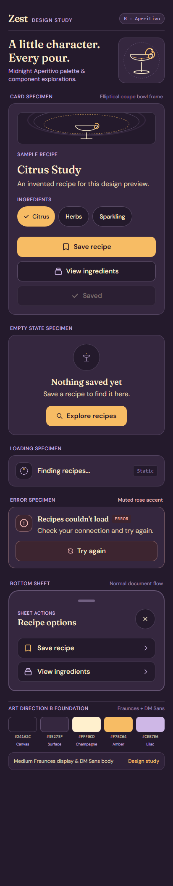
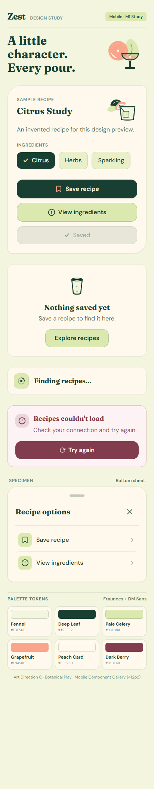

A — Citrus Print
Bold labels, warm paper, ink contours.
Most graphic and playful.

M1 art-direction studies. Choose the visual language; Flutter implementation follows your choice.
Bold labels, warm paper, ink contours.
Most graphic and playful.

Deep plum, champagne type, amber lines.
Quieter and more atmospheric.

Fennel cream, leaf green, cut-paper garnish.
Softer and more relaxed.
